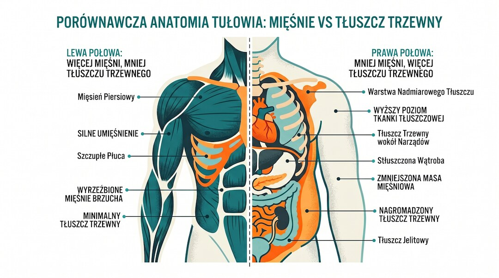
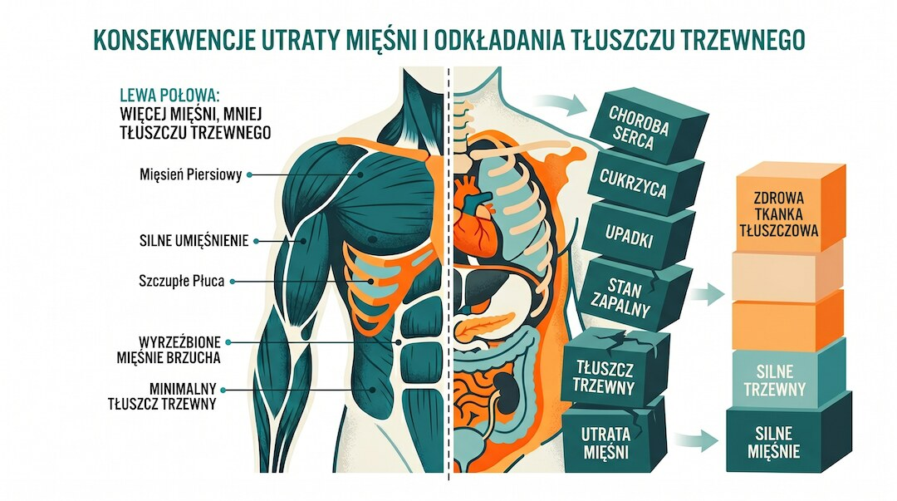
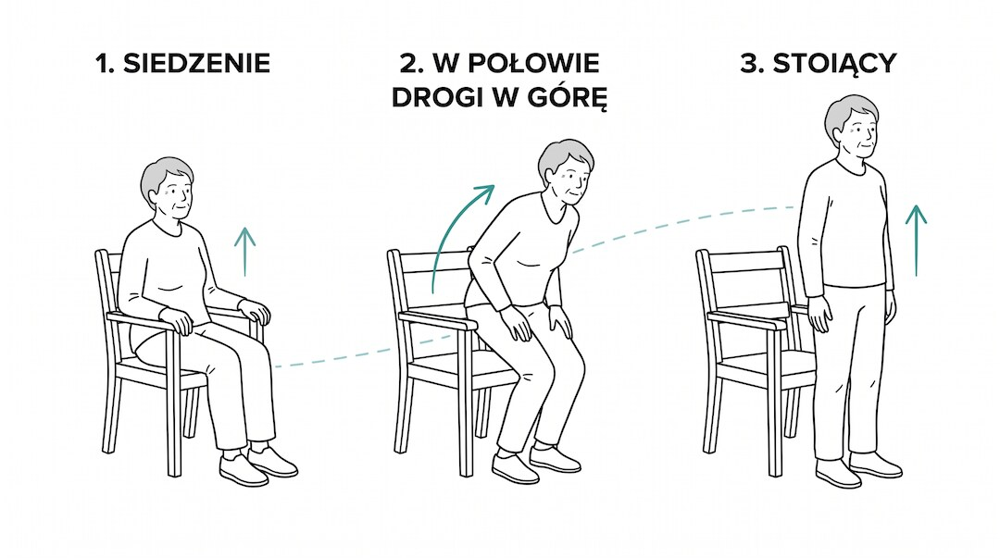
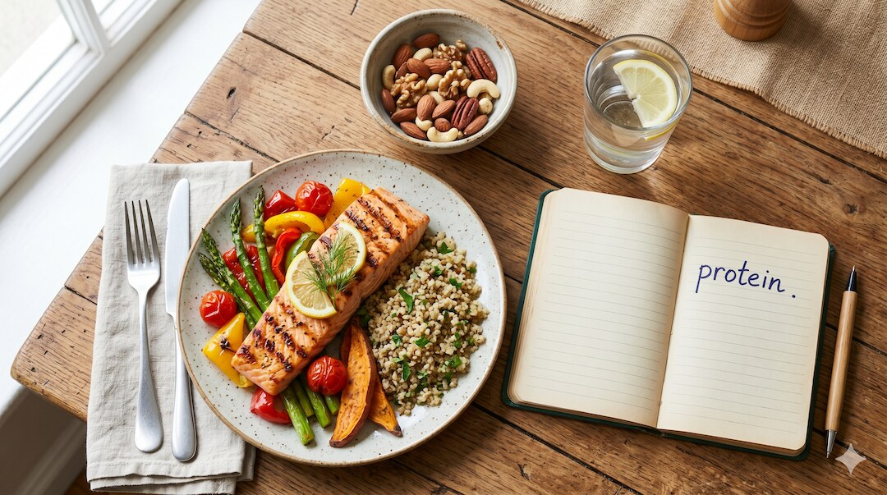
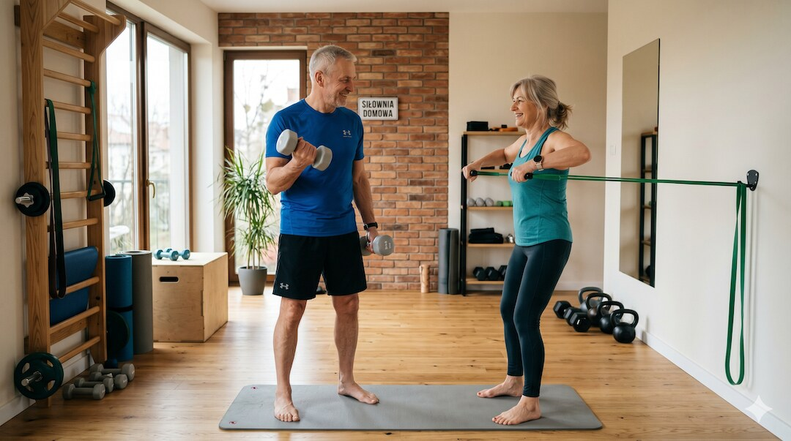
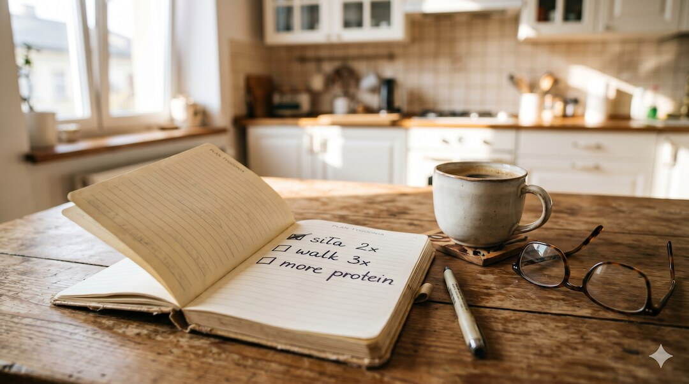

Otyłość sarkopeniczna oznacza jednoczesny nadmiar tkanki tłuszczowej i osłabienie mięśni. Może rozwijać się także wtedy, gdy masa ciała niewiele się zmienia, dlatego sama waga i BMI nie wystarczają do oceny ryzyka. Ten poradnik skupia się na praktyce: prostym teście funkcjonalnym, treningu oporowym, podaży białka oraz bezpiecznym planie pierwszych 30 dni.
Szybka odpowiedź
Otyłość sarkopeniczna oznacza jednoczesny nadmiar tłuszczu i zbyt małą siłę lub masę mięśniową, dlatego prawidłowa waga jej nie wyklucza; jeśli pięć wstań z krzesła zajmuje więcej niż 15 sekund albo codzienne czynności wyraźnie trudnieją, warto omówić ocenę siły i składu ciała ze specjalistą, a plan oprzeć na treningu oporowym oraz odpowiedniej podaży białka.
Kluczowe wnioski
- Prawidłowa masa ciała nie wyklucza jednoczesnego nadmiaru tłuszczu i osłabienia mięśni.
- Domowy test wstawania z krzesła może ujawnić spadek sprawności, ale nie zastępuje diagnozy.
- Najlepiej udokumentowanym bodźcem poprawiającym siłę jest regularny, stopniowany trening oporowy.
- Podaż białka trzeba dopasować do zdrowia, aktywności i masy ciała, szczególnie przy chorobach nerek.
Czym jest otyłość sarkopeniczna i dlaczego BMI Cię oszukuje?
Otyłość sarkopeniczna oznacza współistnienie nadmiaru tkanki tłuszczowej oraz obniżonej masy lub funkcji mięśni. Sama masa ciała nie pokazuje tych proporcji, dlatego BMI może nie ujawnić problemu. Rozpoznanie wymaga najpierw oceny ryzyka, następnie siły mięśniowej, a na końcu składu ciała według ujednoliconych kryteriów ESPEN i EASO.
Mięśnie są ważnym miejscem wykorzystania glukozy, a tłuszcz trzewny wiąże się z większym ryzykiem metabolicznym. Jeśli chcesz zrozumieć różnicę między masą a składem ciała, przeczytaj również, co naprawdę pokazuje domowa waga analizująca skład ciała. Pojedynczy pomiar BIA jest orientacyjny i zależy między innymi od nawodnienia.
Wniosek praktyczny: Nie oceniaj mięśni wyłącznie po masie ciała. Obserwuj siłę, sprawność i obwód pasa, a przy niepokojącym spadku funkcji omów profesjonalną ocenę składu ciała.
- BMI nie odróżnia mięśni od tłuszczu i nie wystarcza do rozpoznania problemu.
- Otyłość sarkopeniczna może występować także bez bardzo wysokiej masy ciała.
- Ocena obejmuje siłę mięśni, sprawność oraz skład ciała.
- Obwód pasa pomaga ocenić ryzyko związane z tłuszczem brzusznym.

Czym jest myosteatoza i dlaczego osłabia mięśnie?
Myosteatoza oznacza zwiększoną ilość tłuszczu w obrębie mięśni i pogorszenie jakości tkanki mięśniowej. Nie da się jej wiarygodnie rozpoznać po wyglądzie ramion czy nóg. Badania łączą ją z gorszą sprawnością oraz większym ryzykiem niekorzystnych zdarzeń, ale domowe odczucie „miękkiego ciała” nie jest diagnozą.
Najbardziej praktycznym sygnałem ostrzegawczym jest pogorszenie funkcji: słabszy chwyt, wolniejsze wstawanie i trudniejsze noszenie zakupów. Znaczenie siły jako wskaźnika zdrowia wyjaśniamy szerzej w artykule o sile chwytu po 50-tce. Ocenę myosteatozy wykonuje się metodami obrazowymi, a nie zwykłą wagą.
Wniosek praktyczny: Jeśli sprawność wyraźnie spada, nie próbuj samodzielnie rozpoznawać tłuszczu w mięśniach. Zacznij od oceny funkcji i konsultacji.
- Myosteatoza opisuje pogorszenie jakości mięśni związane z obecnością tłuszczu.
- Nie można jej rozpoznać wyłącznie po wyglądzie sylwetki.
- Spadek siły i funkcji jest ważniejszym sygnałem niż sama masa mięśni.
- Trening oporowy może poprawiać siłę i skład ciała, ale nie gwarantuje pełnego odwrócenia zmian.

Jak wykonać domowy test wstawania z krzesła?
Usiądź na stabilnym krześle, skrzyżuj ręce na klatce piersiowej i pięć razy wstań oraz usiądź tak szybko, jak potrafisz bez utraty kontroli. Według konsensusu EWGSOP2 wynik dłuższy niż 15 sekund może wskazywać na obniżoną siłę mięśni nóg. To badanie przesiewowe, a nie samodzielna diagnoza sarkopenii.
Wynik warto zapisać i powtórzyć w podobnych warunkach, lecz nie codziennie. Innym użytecznym wskaźnikiem jest siła dłoni; szczegóły znajdziesz w poradniku o domowej ocenie siły chwytu. Ból, zawroty głowy, duszność lub wyraźna niestabilność są powodem do przerwania testu.
Wniosek praktyczny: Jeśli pięć wstań trwa ponad 15 sekund albo wynik wyraźnie się pogarsza, skonsultuj ocenę sprawności zamiast samodzielnie zwiększać trening i białko.
- Wynik powyżej 15 sekund jest sygnałem przesiewowym, nie rozpoznaniem choroby.
- Krzesło musi być stabilne, a test należy przerwać przy niepokojących objawach.
- Siła chwytu i tempo chodu uzupełniają ocenę sprawności.
- Rozpoznanie wymaga profesjonalnej oceny siły, funkcji oraz składu ciała.

Ile białka pomaga chronić mięśnie po 50-tce?
Starsze osoby zwykle potrzebują co najmniej około 1,0–1,2 g białka na kilogram masy ciała dziennie, a przy chorobie lub ryzyku niedożywienia specjaliści czasem rozważają 1,2–1,5 g/kg. Nie jest to jednak uniwersalna dawka dla każdego. Przy chorobie nerek, dużej otyłości lub leczeniu dietetycznym cel powinien ustalić lekarz albo dietetyk.
W praktyce pomaga rozłożenie białka na kilka posiłków i łączenie go z treningiem oporowym. Dokładniejsze zakresy oraz przykłady porcji znajdziesz w poradniku ile białka potrzebujesz po 50-tce. Źródłem mogą być ryby, jaja, nabiał, chude mięso, soja oraz rośliny strączkowe.
Wniosek praktyczny: Zacznij od sprawdzenia, czy główne posiłki zawierają pełnowartościowe źródło białka, zamiast automatycznie sięgać po wysoką dawkę odżywki.
- Typowym punktem wyjścia dla zdrowej starszej osoby jest około 1,0–1,2 g białka/kg/dobę.
- Wyższy zakres 1,2–1,5 g/kg wymaga uwzględnienia stanu zdrowia i celu terapii.
- Odżywka białkowa jest wygodnym uzupełnieniem, ale nie jest obowiązkowa.
- Duży deficyt energii bez treningu oporowego zwiększa ryzyko utraty mięśni.

Dlaczego trening oporowy jest kluczowy przy sarkopenii?
Spacery, rower i nordic walking wspierają wydolność, lecz mięśnie potrzebują także stopniowanego oporu. Badania interwencyjne wskazują, że najlepiej działa połączenie ćwiczeń oporowych z ruchem aerobowym i odpowiednim żywieniem. Dwa lub trzy treningi siłowe tygodniowo mogą poprawiać siłę i sprawność, ale plan powinien zaczynać się od poziomu dopasowanego do stawów oraz chorób przewlekłych.
Na początek wystarczą kontrolowane wstawania z krzesła, pompki przy ścianie i przyciąganie gumy. Bezpieczne zasady progresji opisujemy w poradniku jak zacząć trening siłowy po 50-tce. Obciążenie zwiększaj dopiero wtedy, gdy technika pozostaje stabilna i nie pojawia się nasilający ból.
Wniosek praktyczny: Zachowaj spacery dla serca i wydolności, ale dodaj dwa krótkie treningi oporowe tygodniowo, zaczynając od ćwiczeń, które wykonujesz pewnie.
- Trening oporowy jest podstawowym bodźcem do poprawy siły mięśniowej.
- Ruch aerobowy nadal jest ważny dla wydolności i zdrowia serca.
- Gumy, ciężar własnego ciała i maszyny mogą być dobrym sposobem rozpoczęcia treningu.
- Progres powinien być stopniowy i dostosowany do stanu zdrowia.

Jak ułożyć bezpieczny plan na najbliższe 30 dni?
Pierwszy miesiąc nie służy do „wyleczenia” otyłości sarkopenicznej, lecz do zbudowania powtarzalnego systemu. Ustal dwa dni treningu oporowego, zachowaj regularny ruch aerobowy i sprawdź białko w głównych posiłkach. Test z krzesła wykonaj na początku i po czterech tygodniach, w podobnych warunkach, zamiast oceniać postęp wyłącznie po wadze.
Jeśli długo nie ćwiczyłeś, masz chorobę serca, niekontrolowane nadciśnienie, częste upadki albo nasilający się ból, plan skonsultuj przed rozpoczęciem. Prostą strukturę regularnej aktywności znajdziesz też w poradniku trening 3 razy po 30 minut dla osób 50+. Najważniejsza jest ciągłość, nie perfekcja.
Wniosek praktyczny: Przez 30 dni mierz wykonanie planu, siłę i samopoczucie. Masa ciała może zmieniać się wolniej i nie jest jedynym kryterium postępu.
- Tydzień 1: Zapisz wynik testu z krzesła i oceń białko w głównych posiłkach.
- Tydzień 2: Wykonaj dwa spokojne treningi oporowe po 15–20 minut.
- Tydzień 3: Powtórz ten sam rytm i popraw technikę ćwiczeń.
- Tydzień 4: Powtórz test w podobnych warunkach i zdecyduj o dalszej progresji.

Najczęściej zadawane pytania
Czy mogę mieć otyłość sarkopeniczną, jeśli uprawiam nordic walking?
Tak. Nordic walking wspiera wydolność, równowagę i regularną aktywność, ale zwykle nie zastępuje stopniowanego treningu oporowego. Przy ryzyku otyłości sarkopenicznej warto łączyć marsze z ćwiczeniami siłowymi oraz odpowiednią podażą energii i białka, dopasowaną do stanu zdrowia.
Jakie badania krwi mogą sugerować otyłość sarkopeniczną?
Żadne pojedyncze badanie krwi nie rozpoznaje otyłości sarkopenicznej. Glukoza, profil lipidowy, markery stanu zapalnego, witamina D czy parametry nerkowe mogą pomóc ocenić choroby współistniejące i bezpieczeństwo leczenia, ale diagnoza wymaga oceny siły, sprawności oraz składu ciała.
Czy suplementacja kolagenu pomaga w walce z sarkopenią?
Kolagen nie powinien być głównym źródłem białka przy ochronie mięśni, ponieważ ma niepełny profil aminokwasów. Ważniejsze są pełnowartościowe źródła białka i trening oporowy. Preparat kolagenowy może mieć inne zastosowanie, ale nie zastępuje normalnego posiłku ani indywidualnie dobranej terapii.
Czy po 60. roku życia można jeszcze zbudować mięśnie?
Tak. Starsze osoby nadal mogą poprawiać siłę, sprawność i masę mięśniową dzięki regularnemu treningowi oporowemu oraz odpowiedniemu żywieniu. Tempo zmian jest indywidualne i zależy między innymi od stanu zdrowia, wcześniejszej aktywności, regularności ćwiczeń oraz możliwości bezpiecznego zwiększania obciążenia.
Przy otyłości sarkopenicznej najgorszy duet to deficyt kalorii bez siły i za mało białka. Zacznij od praktycznego przelicznika w Centrum Białka po 50-tce.
Źródła
- ESPEN/EASO: Definition and Diagnostic Criteria for Sarcopenic Obesity
- Scientific Reports 2025: Myosteatosis and risk of fractures in older adults
- EWGSOP2: Sarcopenia – revised European consensus on definition and diagnosis
- Network meta-analysis: training modalities for older adults with sarcopenic obesity
- Systematic review: exercise interventions in sarcopenic obesity
- PROT-AGE position paper: protein needs in older people
Uwaga: Artykuł ma charakter informacyjny i edukacyjny. Nie zastępuje konsultacji lekarskiej, diagnozy ani leczenia.